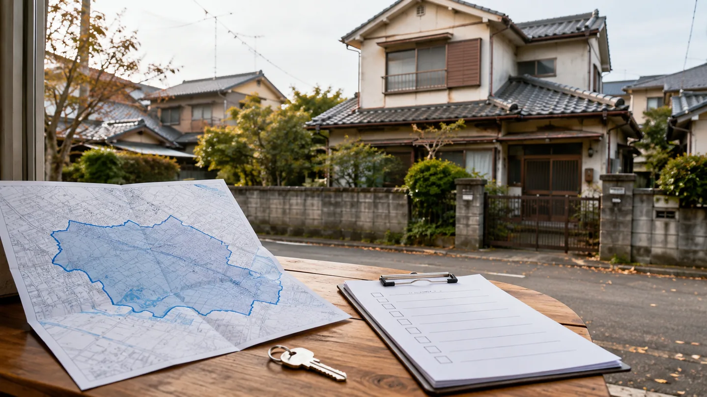
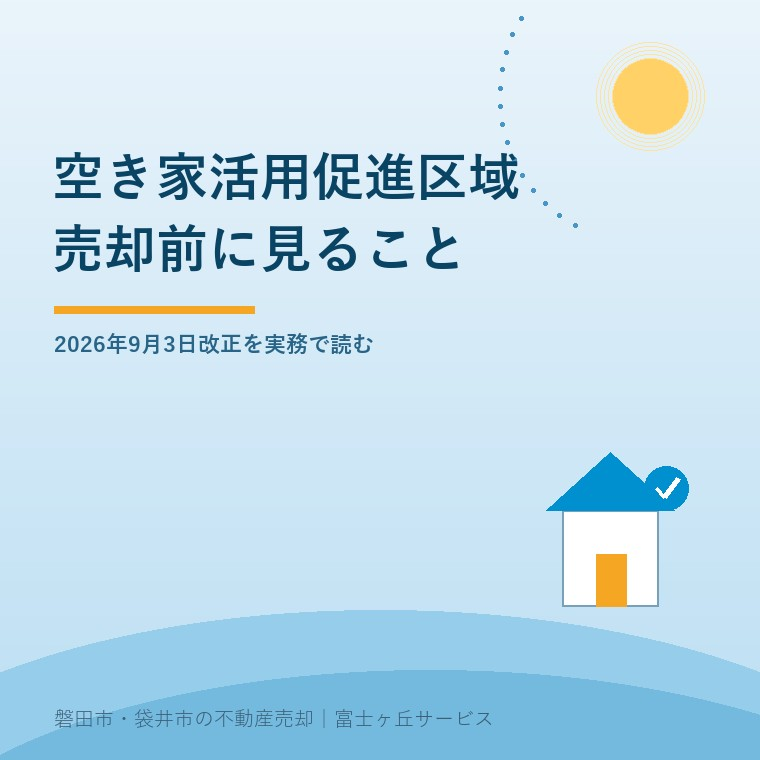

2026年9月5日｜カテゴリ：空き家／売却／制度


この記事の要点
Q. 空家等活用促進区域に入れば、相続した空き家は売りやすくなりますか。
A. 区域は売却や活用の可能性を広げる仕組みですが、指定だけで再建築、用途変更、価格、買い手は保証されません。市町村の区域図と誘導用途を見たうえで、道路、名義、境界、建物状態を物件ごとに確認します。
磐田市・袋井市では、区域の名前より、対象地と売却条件を一枚に整理できる地域密着の会社へ相談する選択肢があります。
「空き家活用促進区域」という名前を見ると、指定された家は売りやすくなるように感じます。相続した空き家を売るか、直して貸すか決め切れないご家族には、気になる制度です。
最初に意外な事実を押さえます。この区域制度は2026年9月3日に新設されたものではありません。2023年の空家法改正で創設され、2023年12月13日に施行されました。2026年9月3日に動いた中心は、相談や活用を支える法人の範囲です。
空家等活用促進区域は、市町村が空家等対策計画に区域と空家等活用促進指針を定め、空き家の用途転換や流通を後押しする制度です。所有者が申請すれば自動的に家へ指定が付く仕組みではありません。
国土交通省のガイドラインは、中心市街地、地域再生の拠点、観光地、住宅団地などを区域の例に挙げています。市町村は、その地域で空き家を何に使いたいかという「誘導用途」も定めます。住宅、店舗、交流施設など、地域により方向は変わります。
| 見る項目 | 売主に関係すること |
|---|---|
| 区域図 | 所有する土地と建物が対象範囲に入るか |
| 誘導用途 | 住宅、店舗、地域交流など、想定される活用の方向 |
| 接道の特例 | 幅の狭い道に接する古家で、建て替えの検討余地があるか |
| 用途規制の特例 | 用途地域の制限と、計画する使い方を両立できるか |
| あっせんの窓口 | 貸したい・売りたい所有者と使いたい人を誰がつなぐか |
市町村長は、所有者へ誘導用途での活用を要請できます。必要に応じて貸与や売却のあっせんなどに努める仕組みもあります。買い手探しの入口が一つ増える可能性はあります。
空き家を放置した場合の管理上の区分は、管理不全空家になる前に見る外壁・庭・税負担で整理しています。活用の制度と、管理状態への指導は別の話です。
2026年9月3日の法改正では、空家等管理活用支援法人に指定できる法人の範囲が広がりました。従来のNPO法人、一般社団法人、一般財団法人、一定の会社に加え、その他の営利を目的としない法人も対象になりました。
国の概要資料は、追加対象の例に商工会議所や商工会などを挙げています。地域の商売や担い手を知る団体が、所有者の相談、管理、活用希望者との調整に関われる余地が増えます。国土交通省は同日、基本指針、区域ガイドライン、支援法人の手引きなども更新しました。
2026年改正で区域そのものが生まれた、と読むのは違います。制度の土台は2023年にあり、今回広がったのは主に支援を担える法人です。売主にとっては、相談先の看板が増える話であって、所有物件の法的条件が一晩で変わる話ではありません。
区域内では、接道規制や用途規制が合理化される場合があります。ただし、市町村の促進指針、地域の要件、安全性、特定行政庁の判断などが必要で、区域内という一事だけでは適用されません。
ガイドラインは、幅員1.8メートル以上4メートル未満の道に2メートル以上接する敷地でも、地域の条件と安全上の判断を満たせば、接道規制が適用されない場合を示しています。古い住宅地では大きな差です。一方、前面道路の幅、通り抜け、避難、消防活動、建物用途などの確認は残ります。
区域に入っただけで家が売れるわけではありません。先に道路・用途・改修費を紙一枚に落とせなければ、制度名だけ増えても持ち主は動けません。
私は宅地建物取引士として、査定額を出す前に道路と境界と名義を見ます。これは体験談としてではなく、私の実務判断です。区域の指定は調査項目を一つ増やしますが、既存の支障を消す魔法ではありません。
市の空き家バンクも出口の一つです。磐田市の掲載状況と媒介契約の条件は、磐田市の空き家バンクは0件ではないで確認できます。区域制度と空き家バンクは、役割も申請の順番も同じではありません。
制度の良い点は、空き家を危険になるまで待たず、使う段階で市町村、支援法人、所有者、活用希望者をつなげられることです。用途や地域を絞るため、「何に使いたい人を探すか」が見えやすくなります。
もう一つの良い点は、狭い道路や用途制限で止まっていた古家に、個別検討の入口ができることです。改修して住宅にするのか、店舗などへ用途を変えるのか、売却するのかを同じ表で比べられます。
その上で、注文したいことがあります。区域名だけではなく、対象範囲、誘導用途、使える特例、相談後の担当、必要書類を一続きで示してほしい。持ち主が知りたいのは制度の意義より、「この地番で、誰に、何を持って行けばよいか」です。
私は、支援法人が増えれば出口も増えると期待したい一方で、少し迷いがあります。相談先が増えても、建築と不動産の判断が分かれたままなら、ご家族は同じ説明を何度もします。良い制度かどうかは、相談件数より、物件の次の一手が見えたかで判断したいと考えます。
補助を使って改修してから売る案は、空き家リフォーム補助金を売る前に使えるかで、現況売却との手取り比較を説明しています。制度が使えることと、工事代を回収できることは分けて見ます。
磐田市・袋井市で空き家を売るか活用するか決め切れない場合、今日の作業は結論を出すことではありません。地番と家の状態を揃え、区域制度を使えるか聞ける状態にすることです。
市や空き家バンクへ相談する前の資料は、空き家バンク相談前に揃えるものにもまとめています。名義や道路が分からなくても相談はできますが、分かる範囲を持参すると話が早くなります。
富士ヶ丘サービスでは、介護と不動産を一体で相談できる入口を設けています。磐田市・袋井市に絞り、売る前の道路、境界、名義、残置物を確認します。「家族が困らない売却」のため、区域指定がなくても売れる条件と、指定があっても残る支障を分けて案内します。
今日、売却か活用かを決める必要はありません。ただ、地番と前面道路だけは確認してください。半年後に売る、貸す、直すのどれを選んでも、その二つは無駄になりません。
区域に入っただけで買い手が現れたり、価格が上がったりするわけではありません。市町村の空家等対策計画に定めた誘導用途、接道や用途規制の特例要件、個別の安全性、名義・境界・建物状態を確認します。売却条件は不動産会社と各担当窓口へ確認してください。
自動的に建て替えられるわけではありません。区域内では接道や用途規制が合理化される場合がありますが、市町村の促進指針、特例要件、特定行政庁の判断などが必要です。道路幅、接道長さ、建築計画を示し、建築士や行政の担当窓口へ個別に確認してください。
いいえ。区域制度は2023年の法改正で創設され、2023年12月13日に施行されました。2026年9月3日の改正では、空家等管理活用支援法人に指定できる法人の範囲が、商工会議所や商工会などを含む非営利法人へ広がりました。

この記事を書いた人：大石浩之（宅地建物取引士）
大石浩之（磐田市／不動産業）。空き家の制度を、区域名だけでなく道路・境界・名義・費用へ落とし、売主とご家族が判断できる順番に整理しています。プロフィール
磐田市・袋井市・森町の空き家売却相談
区域の名前より、地番と売却条件を整理する
売るか活用するか未定でも、道路・境界・名義・残置物を一枚にまとめます。税務・登記・相続の個別判断は各専門家へつなぎます。
本記事は2026年9月5日時点の公表資料に基づく一般的な説明です。区域指定、接道・用途規制の特例、建築可否、売買条件は、自治体の計画と個別物件で変わります。税務・登記・相続の個別判断は税理士、司法書士、弁護士などの専門家に確認してください。
富士ヶ丘サービス株式会社／静岡県磐田市見付5789番地1／TEL:0538-31-3308／静岡県知事 (2) 第14083号／代表取締役・宅地建物取引士 大石 浩之